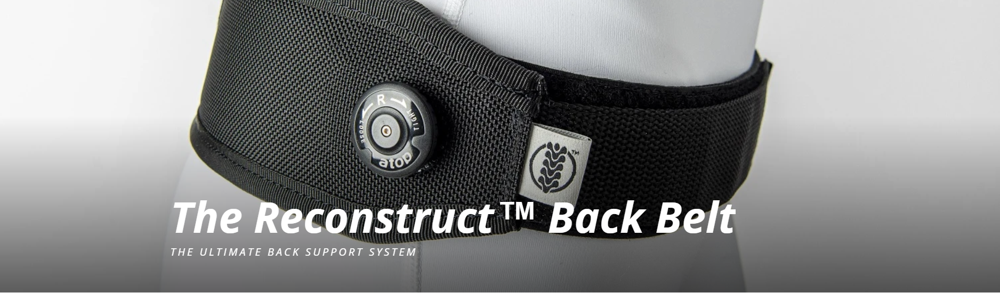
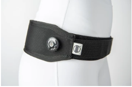
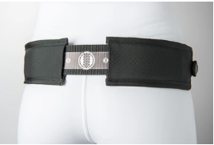

Anti-slip material
A textured surface designed to help the belt stay in position.

THE ORIGINAL PRODUCT CONCEPT
An adjustable back belt with a reel-based fitting system. Explore the product, see how it works and try the original ordering flow.
A CLOSER LOOK
Three features highlighted in the original project.
A textured surface designed to help the belt stay in position.

02Adjust the closure and reel tension to change the fit.

03Use the numbered guide to help repeat your chosen fit.

HOW IT WORKS
The original project includes a product video and fitting guide. See how the belt is positioned and adjusted.
Explore the fitting guide ↗EXPLORE THE STORE
Four colours, three delivery options and a working order preview.